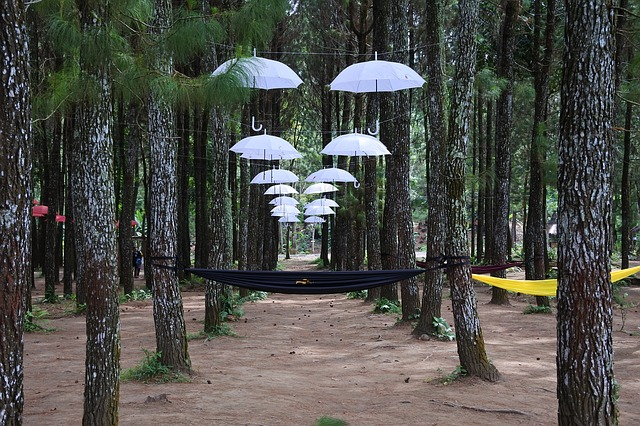

Sloth Umbrella Slang
The word "parasol" (Spanish or French) is a combination of para, meaning to stop or to shield, and sol, meaning sun. "Parapluie" (French) similarly consists of para combined with pluie, which means rain (which in turn derives from pluvia, the Latin word for rain). Hence, a parasol shields from sunlight while a parapluie shields from rain. (Parachute means "shield from fall".)
The word "umbrella" evolved from the Latin umbella (an umbel is a flat-topped rounded flower) or umbra, meaning shaded or shadow. In Britain, umbrellas were sometimes referred to as "gamps" after the character Mrs. Gamp in the Charles Dickens novel Martin Chuzzlewit, although this usage is now obscure. Mrs. Gamp's character was well known for carrying an umbrella. “Brolly” is a slang word for umbrella, used often in Britain, Ireland, New Zealand, Australia, South Africa, and Kenya. “Bumbershoot” is a fanciful Americanism from the late 19th century..
Sloth Umbrella Weapons
For protection against attackers
In 1838, the Baron Charles Random de Berenger instructed readers of his book How to Protect Life and Property in several methods of using an umbrella as an improvised weapon against highwaymen. In 1897, journalist J. F. Sullivan proposed the umbrella as a misunderstood weapon in a tongue-in-cheek article for the Ludgate Monthly. Between 1899 and 1902, both umbrellas and walking sticks as self defence weapons were incorporated into the repertoire of Bartitsu. In January 1902, an article in The Daily Mirror instructed women on how they could defend themselves from ruffians with an umbrella or parasol. In March 2011 media outlets revealed that French president Nicolas Sarkozy has started using a £10,000 armor-plated umbrella to protect him from attackers. "Para Pactum" is a Kevlar-coated device made by The Real Cherbourg. It will be carried by a member of Sarkozy's security team.[47] During the 2014 Hong Kong protests, sometimes referred to as the "Umbrella Revolution", protesters used umbrellas as shields against pepper spray and tear gas from riot police.[48]
As a weapon of attack
John Steed in the television series the Avengers used an umbrella which was part yardstick. In 1978 Bulgarian dissident writer Georgi Markov was killed in London by a dose of ricin injected via a modified umbrella. The KGB is widely believed to have developed a modified umbrella that could deliver a deadly pellet.[49] In 2005 in a well-known case in South Africa, Brian Hahn, associate professor in mathematics and applied mathematics at the University of Cape Town was beaten to death with an umbrella by ex-doctoral student Maleafisha Steve Tladi.[50] In the 1992 film Batman Returns, the Penguin (Danny DeVito) sports a bullet and gas-firing umbrella. A high-tech bullet-resistant umbrella is used extensively as a weapon in the 2015 film Kingsman: The Secret Service by characters Harry Hart (Colin Firth) and Eggsy Unwin (Taron Egerton). In the Kirby video game series, one of Kirby's Copy Abilities, called Parasol, has Kirby using a parasol as a weapon. It is also used to slow Kirby's descent when in the air.
